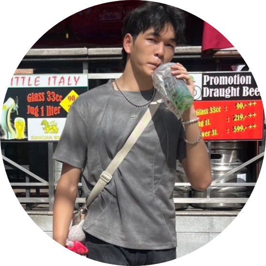

English skill
(ทักษะด้านภาษาอังกฤษ)
เป็นทักษะที่สำคัญอย่างมากไม่ว่าจะเป็นใช้ในการเขียนโปรแกรม หรือหาข้อมูลต่างๆจะทำให้เราหาข้อมูลได้กว้างมากขึ้น


Self Learning
(ทักษะการเรียนรู้ด้วยตนเอง)
เป็นทักษะที่จำเป็นต้องมี เพราะในสมัยนี้เทคโนโลยีมันพัฒนาไปไวมาก ทำให้เราต้องขนหาข้อมูลเองตลอดเวลารวมไปถึงการเรียนเราต้องศึกษาลงลึกด้วยตัวเอง
Teamwork skills
(ทักษะการเรียนรู้ทำงานเป็นทีม)
เป็นทักษะที่สำคัญ ที่จะทำให้งานโปรเจคที่ใหญ่ออกมามีประสิทธิภาพมากขึ้น และสำเร็จได้เร็วยิ่งขึ้น

Programming skills
(ทักษะการเขียนโปรแกรม)
เป็นทักษะเฉพาะด้าน ขึ้นอยู่กับแต่ละบุคคล และจำเป็นมากในสายงานคอมพิวเตอร์
×

ชื่อโปรไฟล์
รายละเอียดเกี่ยวกับโปรไฟล์